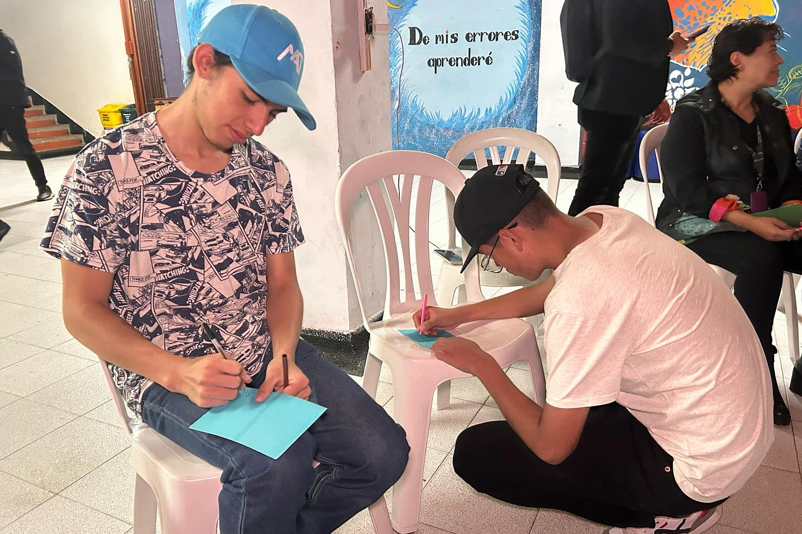
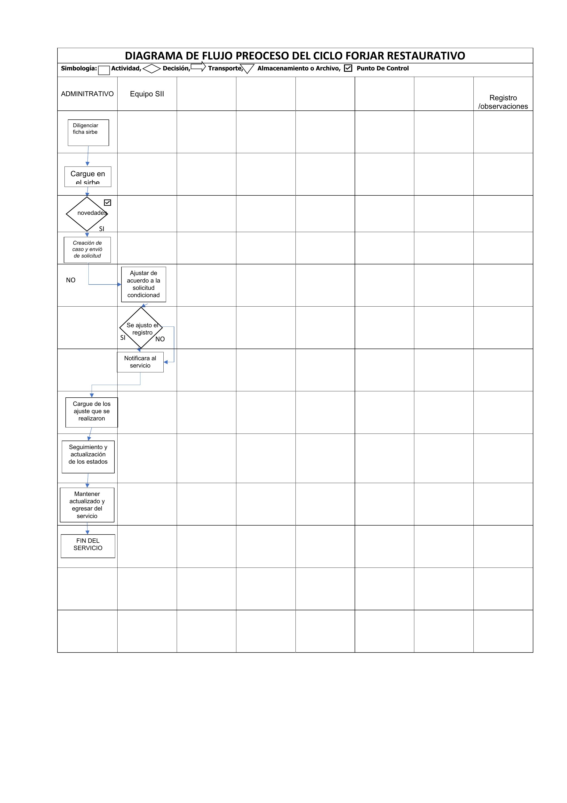

Gestor de conocimiento - Servicio Forjar Restaurativo
Subdirección para la Juventud | SDIS
Servicio Forjar Restaurativo
Servicio de atención integral, especializada y diferencial dirigido a adolescentes y jóvenes de 14 a 28 años vinculados al Sistema de Responsabilidad Penal para Adolescentes (SRPA) y a sus redes familiares, en el marco de modalidades de atención no privativas de la libertad, desde un enfoque pedagógico y restaurativo.

Línea de tiempo
2009
Creación como convenio
El servicio nace en Ciudad Bolívar como respuesta a la “delincuencia juvenil” en zonas de calor. Convenio entre Alcaldía Local, Artesanías de Colombia, CIRCO Ciudad, USAID y OIM, con enfoque en formación en artes y oficios.
2012—13
Consolidación en SDIS
La SDIS asume la operación desde un enfoque de inclusión y política pública. Se consolida como servicio especializado bajo Subdirección para la Infancia. Se abren las unidades de Suba y Rafael Uribe Uribe para cubrir el 100% del distrito.
2020
Llega a Juventud
El servicio es trasladado de la Subdirección para la Infancia a la Subdirección para la Juventud, bajo el proyecto de inversión 7740 “Generación Jóvenes con Derechos en Bogotá”.
2021
Nuevas rutas
Se diseña la Ruta de Oportunidades Juveniles y la Ruta Integral de Atención para Jóvenes (RIAJ) para orientar a quienes están vinculados al Sistema de Responsabilidad Penal para Adolescentes (SRPA).
2023
Marco normativo
Adopción del Anexo Técnico de Estándares de Calidad (Resolución 0824, abril 2023) y publicación del Documento Metodológico (septiembre 2023). Se armonizan los postulados de justicia restaurativa y juvenil con las políticas distritales.
2025
Egreso fortalecido
Se amplía la estrategia de acompañamiento en el egreso para brindar continuidad voluntaria por 6 meses a 1 año tras cumplir la sanción, consolidando la inclusión social y productiva.
2026
Manual operativo
Creación del Manual Operativo que reemplaza el Modelo de Atención Integral. Actualiza referentes conceptuales y metodológicos articulados con las condiciones específicas de calidad del servicio.
A tener en cuenta
Cambio de paradigma en el nombre
El servicio antes se conocía como “Centros Forjar”. La palabra “centro” fue eliminada porque los jóvenes la asociaban con centros de reclusión, lo que iba en contra del enfoque restaurativo. La referencia correcta es servicio Forjar. Nunca “Centro Forjar”.
Justicia restaurativa, no retributiva
El servicio se fundamenta en tres pilares: responsabilización, reparación del daño e inclusión social. Se distancia del modelo de justicia retributiva centrado en el castigo.
Atención a jóvenes mayores de edad
Forjar atiende hasta los 28 años en dos líneas: SRPA (cuando el ingreso ocurrió antes de los 18) y jóvenes que requieren restablecimiento de derechos. Más de la mitad de la población atendida es mayor de edad.
Cobertura distrital desde tres puntos
Opera físicamente en 3 unidades operativas (Suba, Ciudad Bolívar y Rafael Uribe Uribe), pero atiende al 100% del Distrito Capital recibiendo jóvenes de cualquier localidad.
Continuidad voluntaria tras la sanción
El acompañamiento no termina con la orden del juez. Los jóvenes pueden continuar de manera 100% voluntaria por 6 meses a 1 año para consolidar su proyecto de vida y evitar el retorno a entornos vulnerables.
Cumplimiento de mandatos judiciales
A diferencia de otros servicios, el cumplimiento en Forjar no es voluntario: responde a imposiciones de autoridades del SRPA. La prestación no puede interrumpirse porque cualquier incumplimiento puede generar consecuencias legales y disciplinarias.
Equipo
Liderazgo
Aura Vanessa León - Líder del Servicio Forjar Restaurativo, Subdirección para la Juventud, SDIS.
Coordina la atención especializada, formación para el trabajo y oportunidades juveniles. El servicio hace parte de la estructura territorial de la SDIS, reportando al Subdirector para la Juventud.
Componentes del equipo de atención integral
El equipo se organiza en ocho componentes que articulan los roles profesionales de la atención integral. La agrupación por color identifica el tipo de aporte: atención directa al joven, apoyo especializado y soporte técnico y administrativo.
Componente socioemocional
Psicólogos/as
Componente relacional vincular
Trabajadores/as sociales
Componente sociojurídico
Abogados/as
Componente estilos de vida saludable
Nutricionistas - Auxiliares de Enfermería
Componente administrativo
Líder Administrativo - Auxiliares Administrativos
Componente pedagógico
Pedagogos/as - Terapeutas Ocupacionales
Componente técnico
Líder del Servicio - Enlace CESPA - Responsables de Unidad - Líder de Fortalecimiento Técnico - Líder de Inclusión Productiva - Líder de Alertas
Componente de gestión y articulación
Enlaces Sociales
Equipo de atención integral
Ubicación
El servicio Forjar Restaurativo opera en 3 unidades operativas ubicadas en localidades con alta incidencia, con cobertura para el 100% del Distrito Capital.
Aunque opera desde estos puntos, el servicio recibe jóvenes de cualquier localidad de Bogotá.
El servicio Forjar Restaurativo da cumplimiento a sanciones no privativas de la libertad en medio abierto y comunitario. También recibe jóvenes para medidas de restablecimiento de derechos y atiende a quienes continúan voluntariamente tras cumplir su sanción.
Las modalidades se clasifican según el tipo de medida, sanción o estrategia impuesta por la autoridad competente.
1. No privativas de la libertad (sanciones)
Se cumplen en medio abierto, sociofamiliar o comunitario. Buscan la responsabilización, reparación del daño e inclusión social.
•Libertad asistida y/o vigilada
Concesión de libertad otorgada por la autoridad judicial con la condición de que el adolescente o joven se someta a supervisión, asistencia y orientación de un programa especializado. Busca fortalecer la autonomía y la reparación a través de espacios pedagógicos y prácticas restaurativas. Mínimo 10 actividades mensuales.
Para garantizar la efectividad de esta medida, estas intervenciones mensuales se distribuyen estratégicamente a nivel individual, familiar, grupal y en el contexto del joven. Con este abordaje integral, el programa involucra activamente a la familia o red vincular de apoyo para que lo acompañen en el reconocimiento de su responsabilidad, facilitando procesos de reparación (directa, indirecta o simbólica) hacia las personas afectadas y logrando la resignificación de su proyecto vital en el marco de la cultura de la legalidad.
•Prestación de servicios a la comunidad
La prestación de servicios a la comunidad es una sanción judicial que consiste en la ejecución de acciones o actividades no remuneradas de utilidad social por parte del adolescente o joven. Mínimo 32 horas mensuales: 24 horas de trabajo comunitario y 8 horas de acompañamiento psicosocial.
Esta sanción tiene una finalidad restaurativa y formativa, ya que busca que el participante reflexione de forma crítica sobre las consecuencias de su conducta punible. Las acciones ejecutadas posibilitan la reparación directa, indirecta o simbólica a la víctima, a la familia y a la comunidad, facilitando así la restauración de los lazos de confianza afectados, la reconstrucción del tejido social y el fortalecimiento del sentido de ciudadanía.
2. Apoyo y restablecimiento de derechos
Medidas complementarias frente a vulneraciones de derechos.
•IARAJ
La Intervención de Apoyo al Restablecimiento en Administración de Justicia (IARAJ) es una modalidad que se aplica como medida complementaria, cuyo propósito central es el restablecimiento y la garantía de los derechos de los adolescentes y jóvenes bajo el acompañamiento y orientación de su red familiar. Su implementación operativa requiere un cumplimiento mínimo de diez (10) actividades mensuales, desarrolladas mediante intervenciones individuales, grupales, familiares y contextuales, asegurando un abordaje sistémico frente a la problemática.
A través de este servicio en medio abierto, se ofrece apoyo pedagógico, psicológico y psicosocial especializado para que los participantes se vinculen a escenarios de socialización positiva. La finalidad es brindarles herramientas que les permitan comprender y responsabilizarse de los hechos de riesgo en los que se han involucrado, mitigando así los factores de vulnerabilidad social en su entorno.
•RIAJ
La Ruta Integral de Atención para Jóvenes (RIAJ) es una estrategia garantizada por la Secretaría Distrital de Integración Social, dirigida específicamente a jóvenes (incluso mayores de edad) que se encuentran en conflicto con la ley penal, pero cuya situación jurídica aún no ha sido definida por la autoridad competente. Al igual que la modalidad IARAJ, su modelo de intervención exige un mínimo de diez (10) actividades mensuales de atención y orientación junto con el joven y su familia.
El enfoque principal de la estrategia RIAJ es preventivo y protector, operando a través de la gestión de servicios, la generación de alertas y la vinculación a la oferta institucional del Distrito. Su desarrollo busca favorecer el acceso real a oportunidades de inclusión en áreas fundamentales como el empleo, el emprendimiento, la educación, el aprovechamiento del tiempo libre, el arte, la cultura y el deporte, evitando de este modo la escalada en conductas delictivas.
3. Estrategias transversales de continuidad
•Estrategia de acompañamiento al egreso
Dirigida a quienes culminaron el cumplimiento de diversas modalidades del Sistema de Responsabilidad Penal para Adolescentes (SRPA) y deciden dar continuidad voluntaria a su proceso. Acompañamiento por 6 meses a 1 año para consolidar la inclusión social y productiva mediante la Ruta de Oportunidades Juveniles.
Para materializar este objetivo, el equipo de la Ruta de Oportunidades Juveniles (ROJ) implementa acciones estratégicas de gestión y articulación intra e interinstitucional para conectar a los jóvenes y a sus familias con la oferta de servicios locales y distritales. Este esfuerzo se centra en garantizar el acceso efectivo a oportunidades de educación, empleabilidad, emprendimiento, salud, cultura y deporte, respondiendo a los intereses y necesidades particulares de cada participante. El propósito final de esta fase de transición es fomentar la autonomía del joven, consolidar un proyecto de vida con sentido en el marco de la legalidad y asegurar una plena integración social que actúe como escudo protector frente a la reincidencia.
Proceso operativo
Proceso operativo de atención integral para adolescentes y jóvenes vinculados al SRPA. Conoce las etapas, actividades, registros, formularios y actores clave del servicio.
Flujo operativo del servicio
Haz clic en una etapa para ver el detalle de actividades, registros y responsables.
01
Ingreso y Acogida
Reconocimiento y sensibilización
Recepción del caso, inducción, valoraciones interdisciplinarias y construcción del PAI inicial.
02
Permanencia
Ejecución y seguimiento al PAI
Intervenciones individuales, familiares y grupales con enfoque pedagógico y restaurativo.
03
Proyección y Egreso
Cierre formal del proceso
Estudio de caso de egreso, informe final y socialización de la Estrategia de Acompañamiento.
04
Post-Egreso (RAE)
Estrategia de Acompañamiento al Egreso
Acompañamiento voluntario de hasta 1 año para la inclusión social y productiva del joven.
Etapa 01 — Ingreso y Acogida
Garantizar el recibimiento, orientación y reconocimiento del adolescente como sujeto de derechos. Desde la recepción del caso hasta la construcción del PAI inicial.
Actividad
Registro
Responsable
Recepción de casos remitidos por Defensorías de Familia del SRPA y Juzgados Penales para Adolescentes
Base de remisiones · Oficios de remisión judicial/administrativa
Enlace CESPA
Inducción sobre el servicio al joven y su familia. Socialización y firma de acuerdos para la convivencia. Corroboración de información y orientación básica sobre la medida/sanción, oferta y unidad asignada
Historia Social: Acuerdo de convivencia FOR-PSS-476
Enlace CESPA
Registro en el sistema de información SIRBE y designación del equipo psicosocial
Formulario de caracterización participante · Registro en base de datos y SIRBE
Equipo Administrativo
Valoraciones del equipo interdisciplinario (psicología, trabajo social, pedagogía, terapia ocupacional, enfermería, nutrición) a nivel individual, familiar y contextual
Base de datos — formulario
Equipo Interdisciplinario
Realización de visita sociofamiliar inicial para identificar aptitudes, problemáticas y factores de vulnerabilidad
Historia de Atención: Formulario de visita domiciliaria
Equipo Interdisciplinario
Elaboración del PAI inicial con objetivos individuales, grupales, familiares y contextuales. Socialización con el joven, familia y radicación ante la autoridad competente
Historia Social: Informe PAI — formulario
Equipo Psicosocial
Etapa 02 — Permanencia
Implementar las acciones del PAI con enfoque pedagógico, restaurativo, integral y diferencial. Intervenciones a nivel individual, familiar, grupal y comunitario.
Actividad
Registro
Responsable
Ejecución de las acciones definidas en el PAI: intervenciones individuales, familiares y grupales con enfoque pedagógico y restaurativo
Base de intervención
Equipo Interdisciplinario
Desarrollo de las fases restaurativas centrales: Reconocimiento · Responsabilización · Reparación
Informe sobre el desarrollo de las fases restaurativas centrales
Equipo Interdisciplinario
Elaboración y radicación del informe de seguimiento al PAI según periodicidad establecida
Informe de seguimiento al PAI
Equipo Interdisciplinario
Etapa 03 — Proyección y Egreso
Preparar al adolescente para la finalización formal del proceso: evaluar logros, identificar aspectos pendientes y proyectar la continuidad en el ejercicio pleno de sus derechos.
Actividad
Registro
Responsable
Elaboración del estudio de caso de egreso: evaluación del proceso para definir si el joven cumplió las finalidades de la medida o sanción. Toma de decisiones, articulación y movilización de redes
Formato de estudio de caso
Equipo Interdisciplinario
Socialización de la Estrategia de Acompañamiento al Egreso al joven (si el joven acepta — ver Etapa 4)
—
Bina Psicosocial
Elaboración y socialización del informe de egreso: cierre formal del proceso con el adolescente o joven y su familia
Informe de egreso
Bina Psicosocial
Etapa 04 — Post-Egreso (RAE)
Estrategia de Acompañamiento al Egreso de carácter voluntario. Duración máxima de 1 año. Favorece el acceso a salud, educación, cultura, recreación, deporte, empleabilidad y emprendimiento.
Actividad
Registro
Responsable
Aplicación del test de necesidades juveniles
Base de datos
Equipo Interdisciplinario (ROJ)
Elaboración del plan de acompañamiento al egreso y firma del acuerdo de voluntariedad
Formato de compromiso
Equipo Interdisciplinario (ROJ)
Acompañamiento al egreso durante el período de intervención
—
Equipo Interdisciplinario (ROJ)
Cierre del proceso de la ruta una vez terminado el tiempo de intervención
Formato de Verificación FOR-PSS-752
Responsable Unidad · Equipo Jurídico · ROJ
Documentos y formularios
Accede a los formatos, instrumentos y formularios asociados a cada etapa del servicio.
Roles y responsabilidades en la prestación del servicio.
Enlace CESPA
Lidera la recepción, identificación y orientación inicial del participante.
Equipo Administrativo
Responsable del registro en SIRBE y los sistemas de información institucionales.
Equipo Interdisciplinario
Psicología, trabajo social, pedagogía, terapia ocupacional, enfermería, nutrición.
Equipo ROJ
Ruta de Oportunidades Juveniles. Implementa la estrategia de post-egreso (RAE).
Familia / Referente
Participación activa y transversal desde el ingreso hasta el egreso.
Autoridades Competentes
Defensorías de Familia SRPA y Juzgados Penales para Adolescentes.
Flujo de gestión de la información
Proceso de recolección, registro y reporte de datos en el servicio Forjar Restaurativo.
Paso 01
Ingreso y acogida
Equipo psicosocial
Durante el ingreso, el equipo psicosocial (psicología y trabajo social) realiza la acogida mediante entrevista. Se generan dos registros: el diligenciamiento de la ficha SIRBE y la toma de datos en la Valija Estandarizada. Se capturan variables básicas (edad, sexo, educación), transversales (pertenencia étnica, discapacidad), de ubicación geográfica, dinámicas familiares y variables específicas sobre la remisión judicial y el delito.
Paso 02
Instrumentos de captura de información
Equipo psicosocial
Fichas SIRBE: la información se consigna en dos formatos estandarizados de la SDIS: el formato de información básica y transversal (FOR-PSS-321) y el formato de variables específicas del servicio Forjar (FOR-PSS-694).
Valija Estandarizada: base de datos en Excel utilizada internamente por cada unidad operativa. Recopila datos básicos y transversales, asigna un número de “Historia Social” para el archivo físico e incluye variables de contraste para verificar la consistencia y calidad de la información antes de subirla al sistema oficial.
Paso 03
Digitalización en SIRBE WEB
Enlace CESPA · Equipo psicosocial
Una vez consolidada la información en fichas físicas y Valija Estandarizada, se realiza el cargue al aplicativo SIRBE WEB (Sistema de Información Misional). Allí queda el estado actualizado de cada usuario: ingresos, seguimientos, incumplimientos de sanción y egresos.
Paso 04
Controles de calidad y reportes
Referente técnico
El proceso está regulado por manuales que definen los roles. Los referentes técnicos revisan mensualmente los datos para ajustes previos a los reportes.
El tratamiento de datos personales es estrictamente confidencial y se rige por la Ley Estatutaria 1581 de 2012.
La información depurada sirve como insumo para preparar mensualmente el Informe Cualitativo y Cuantitativo del Servicio Forjar Restaurativo, que visibiliza el volumen de atenciones, cumplimiento de metas y avance del modelo.
Diagrama de flujo del proceso
Representación visual del ciclo de recolección y digitación en SIRBE para el servicio Forjar Restaurativo.

Datos SIRBE
?
SIRBE (Sistema de Información para el Registro de Beneficiarios) es el aplicativo de datos de la Secretaría Distrital de Integración Social (SDIS) en Bogotá. Su función principal es registrar, sistematizar y hacer seguimiento a la información de los ciudadanos que acceden a los servicios sociales, proyectos y ayudas de la entidad. La información registrada en las “Fichas SIRBE” es confidencial y su uso se limita a la gestión interna de servicios sociales.
×
Cómo se estructura el servicio Forjar Restaurativo dentro del sistema de información misional SIRBE.
Tipología en SIRBE
Forjar funciona en SIRBE bajo la tipología de “servicio social”.
Entrada al servicio
Los jóvenes ingresan remitidos por juzgados o por el ICBF, llegan con una historia social, y el primer paso siempre es diligenciar la ficha SIRBE física específica para registrar sus datos transversales.
Seguimiento a largo plazo
Debido a que los jóvenes ingresan para cumplir una sanción, su permanencia en el servicio toma un tiempo prudente. Las modalidades y actuaciones están diseñadas para que los jóvenes sigan una ruta, de modo que SIRBE registra todo su historial de movimientos.
Estados adaptados al sistema penal
A diferencia de otros servicios, Forjar no maneja actuaciones de “intervención”. Maneja tres actuaciones de estado:
En atención El joven se encuentra cumpliendo su sanción o medida activamente
Egresado El joven ha finalizado el cumplimiento de su sanción
En incumplimiento Funciona en la práctica como un estado “suspendido”, pero se creó con este nombre específico para no generar confusiones con la terminología oficial del Sistema de Responsabilidad Penal para Adolescentes (SRPA)
Aliados
Entidades y organizaciones que apoyan la operación del servicio Forjar Restaurativo.
Alianzas 2025
ANDI
Más Empleo
Conectar las oportunidades laborales del sector empresarial con los jovenes, a través de una ruta de empleabilidad y el aprovechamiento de las capacidades de las partes involucradas.
Diferentes empresas
Más Manos por Bogotá: voluntariado integrador Comidas compartidas
Ofrecer espacios para que las empresas desarrollen sus programas de voluntariado corporativo, ayudando a construir una ciudad incluyente y competitiva en equipo con funcionarios de la Alcaldía de Bogotá y los habitantes de la ciudad.
GOYN
Emprendiendo Futuro
Impulsar el emprendimiento juvenil y la inclusión financiera de 80 jóvenes vinculados a los Centros Forjar (Suba, Ciudad Bolívar, Rafael Uribe y Bosa) y al Sistema de Responsabilidad Penal para Adolescentes (SRPA). La metodología Rebel práctica, inmediata y centrada en la acción busca crear experiencias positivas mediante ventas reales, confianza financiera y acompañamiento cercano.
IDARTES
Libro al viento
Aportar a los procesos de justicia restaurativa y reconstrucción de proyectos de vida mediante actividades de lectura, escritura y reflexión con jóvenes vinculados a la estrategia Forjar Restaurativo.
TEATRO NACIONAL
Obras de teatro
Fortalecer el bienestar, la recreación y el acceso a bienes culturales de las diferentes poblaciones, incluyendo la población joven.
Conectar las oportunidades laborales del sector empresarial con los jovenes, a través de una ruta de empleabilidad y el aprovechamiento de las capacidades de las partes involucradas.
Educamas
Data Lab
Desarrollar habilidades vocacionales y comportamentales, junto con competencias digitales en análisis de datos necesarias para el mundo actual, acompañando a 210 jóvenes entre 17 y 28 años a su acceso a la educación superior.
ENMENTE
Articulación con Enmente
Relaiazar 4 talleres de capacitación y fortalecimiento al equipo psicosocial
IDARTES
Apuesta 3: Nodos (Lit) Libro al Viento
Fomentar lectura y slam en adolescentes SRPA.
Secretaria de Habitat
Voluntaridao Territoros Magicos
Articular acciones entre la Secretaría Distrital de Hábitat y la SDIS para vincular jóvenes del territorio al proceso Territorio Mágico Cerro Norte, promoviendo su participación en procesos de formación, voluntariado comunitario y apropiación del espacio público